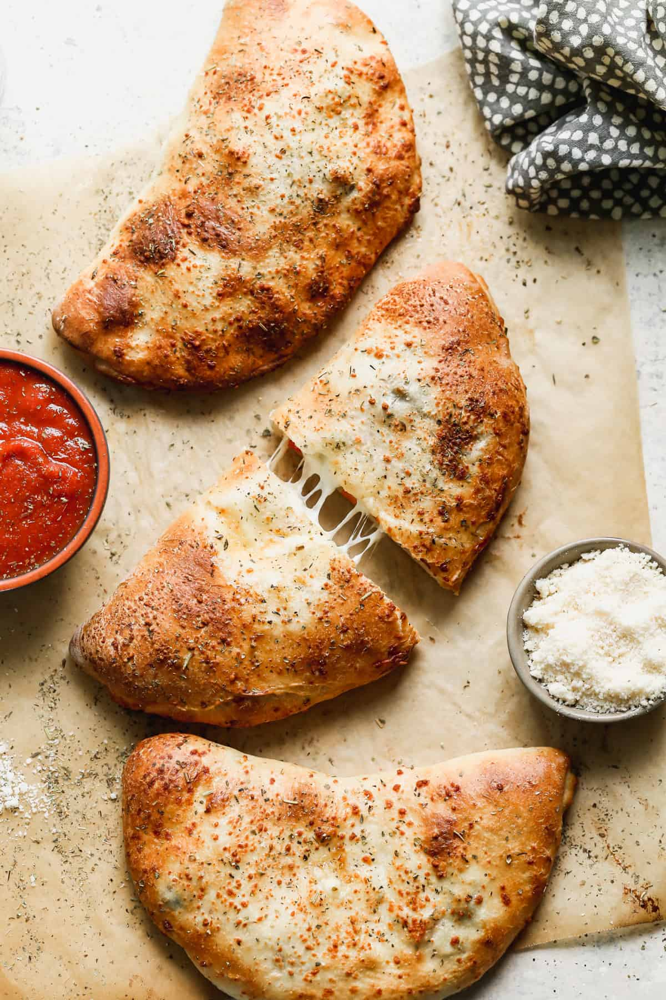

This unique type of pizza is characterized by its half-round shape, made by folding a full-sized pizza in half. Typically, calzones are filled with meats such as salami or ham and cheeses such as mozzarella, ricotta, parmesan, and pecorino whereas fried calzones with mozzarella and tomatoes are a specialty from the Italian region of Apulia, and are known as panzerotti.
Meal prep time : 45 minutes
Servings : 1 (8 slices)